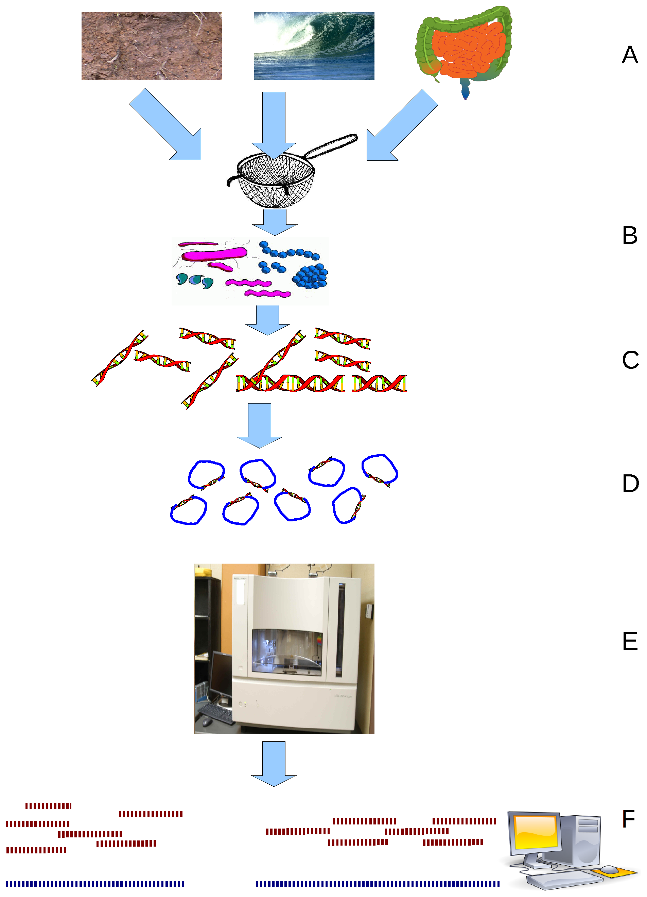
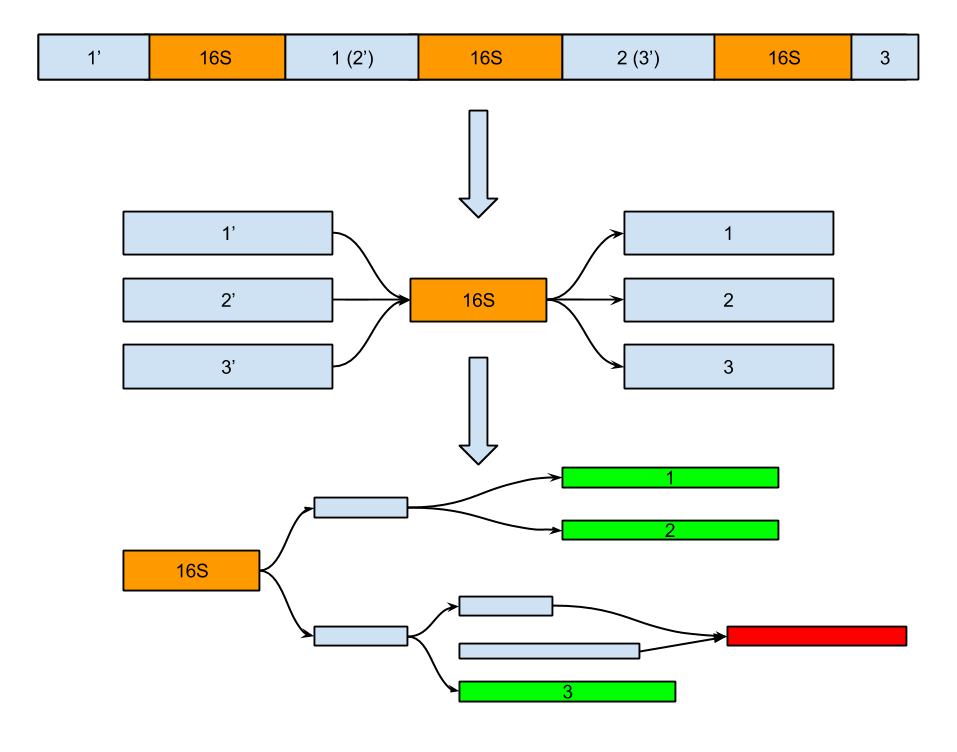

Metagenomic assembly and annotation of 16S ribosomal RNA genes by SPAdes
Scientific advisor:
Sergey Nurk, Algorithmic biology lab
Purpose
Extract 16S rRNA genes and corresponding information from metagenomic assembly
Why?
16S rRNA genes are very important in molecular phylogeny due to slow evolution rates of their regions
One great example [deprecated]

Woese et al. (1990)
Contemporary view

Christopher et al. (2015)
Metagenomics in a nutshell
 https://en.wikipedia.org/wiki/MetagenomicsSPAdes 16S rRNA assembly for isolates
| Organism | 16S rRNA copies in genome | Assembled |
|---|---|---|
| Some bacteria | 2-15 | 1+* |
*This number depends on available sequencing information (mate-pair, PacBio reads, etc.)
How to detect 16S rRNA?
- Easy: align known 16S rRNA to assembled contigs;
- Much better: use discriminative model (like HMM) including both 1° and 2° structures.
Source of problems [exclude, probably]
 The same
The same 1-3: order, 4-11: class, 12: phylum
Correspondence between 16S rRNA in genome and in assembly graph
Bioinformatics reality

Results
Simulated dataset metagenomic assembly
| Number of bacteria | 16S rRNA expected/found | Long contigs expected/found |
|---|---|---|
| 45 | 45/39 | 320/118 |
Comparison of 16S rRNA from targeted assembly and from SPAdes contigs
| Expected number of 16S rRNA | Found in contigs |
|---|---|
| 1679 | 1368 |
*311 missed 16S rRNA may be due to introns in some 16S or simply misassemblies.